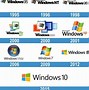
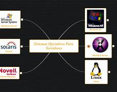

Existen varios tipos de sistemas operativos, cada uno diseñado para
diferentes entornos y necesidades. A continuación, se presentan
algunos de los tipos más comunes, junto con sus ventajas y
desventajas:
Sistemas Operativos de Escritorio (Windows, macOS, Linux Ubuntu,
Fedora)
Ventajas
- Interfaz gráfica amigable que facilita su uso.
- Amplia compatibilidad con software y hardware.
-
Soporte técnico y comunidad activa (especialmente en Linux).
Desventajas
-
Pueden ser vulnerables a virus y malware (especialmente Windows).
- Requieren recursos de hardware relativamente altos.
-
Algunas versiones pueden ser costosas (como Windows y macOS).

Sistemas Operativos Móviles (Android y iOS)
Ventajas
-
Optimizados para dispositivos móviles, con un consumo eficiente de
energía.
-
Gran cantidad de aplicaciones disponibles en tiendas de
aplicaciones.
- Interfaz táctil intuitiva.
Desventajas
-
Limitaciones en comparación con sistemas de escritorio en términos
de funcionalidad
-
Dependencia de la conectividad a Internet para muchas
aplicaciones.
-
Actualizaciones de sistema pueden ser lentas o limitadas
dependiendo del fabricante.
Sistemas Operativos de Servidor (Windows Server, Linux Server
(CentOS, Ubuntu Server), Unix)
Ventajas
-
Diseñados para manejar múltiples usuarios y procesos
simultáneamente
- Mayor seguridad y estabilidad para aplicaciones críticas.
-
Capacidad para gestionar grandes volúmenes de datos y tráfico de
red.
Desventajas
-
Requieren conocimientos técnicos avanzados para la configuración y
gestión.
-
Pueden ser costosos (especialmente las versiones comerciales).
- Menor compatibilidad con software de escritorio.

Resumen breve de la unidad
Elementos Principales de un Sistema Operativo
Diferentes tipos de sistemas operativos, ventajas y
desventajas.
Formas de comunicación, modo texto, modo grafico.
Escritorio, icono, ventanas.
Operaciones elementales como administrador del S.O. y como
usuario común.
Formas de organización de la información. Carpetas y archivos.
(Crear, Renombrar, mover, copiar, eliminar, proteger).
Configuración de algunos elementos del sistema operativo.